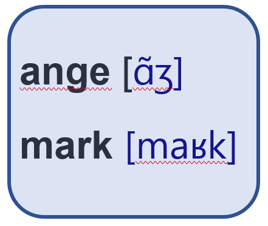
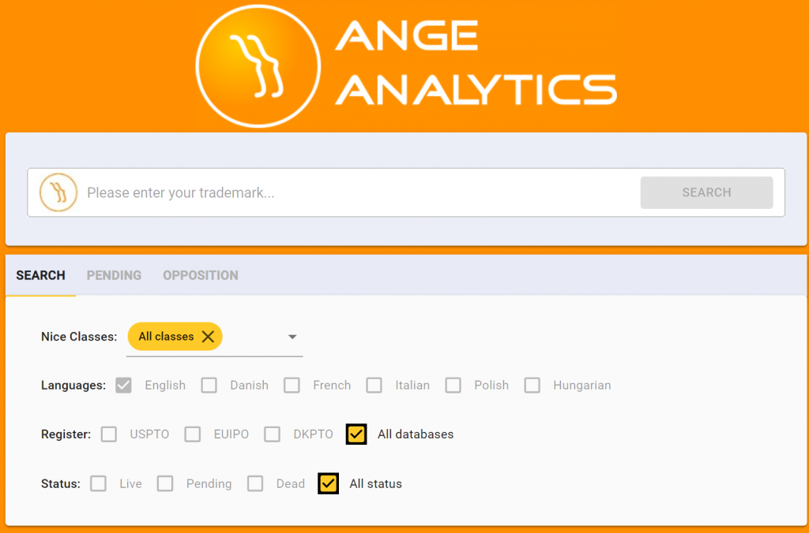
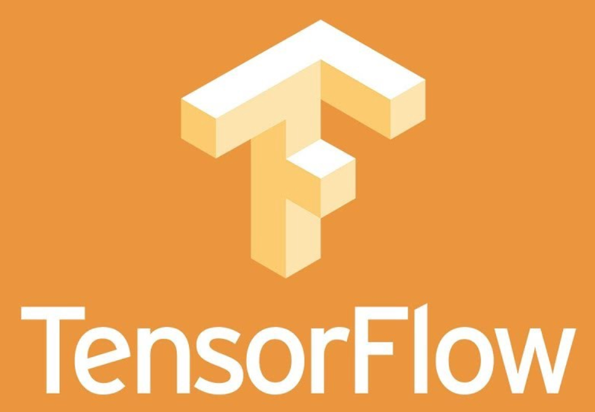

AngeMark
How does it work?!
AngeMark converts a mark into a sequence of sound units (or phonemes) and compares it with the registered trademarks. It also compares the relative distances of the different sounds.
It knows about classes!
AngeMark won’t bother you with results that are in different classes except if they nearly identical to yours. ‘Expired’ and ‘Rejected’ trademarks are also available but you need to ask for them.
It’s Free! and you can get it with your own TM data!
Yup, we are silly. Try it and if you need other sources than US and EU trademarks, call us. We can add your sources of TM and deploy at your location, on AWS, Google Cloud or Azure.
It looks good!
Our front-end uses the same framework as Facebook. It will work on your desktop and mobile device. When Facebook decide to add a widget, our desktop will get it too without effort.
It has many rules
To calculate the similarity, AngeMark employs semantic-, phonetic-, and syntactic-base rules. The rules are combined into a Machine Learning model that detects and orders the matches in decreasing order of similarity.
Learns on the fly
Our model receives daily the rejected, contested, and accepted trademarks. Using this information, it re-trains itself to learn from its mistakes. It means that our model improves with time.
Fast and scalable
Thanks to Amazon elastic cloud, it scales without any need for performance experts or IT specialists.
Under the hood

We use Tensorflow, Python, NLTK, Linear SVM, NoSql, React, and Material-UI as engine. The fuel are the open source dictionaries, the US- and EU-IPO, and all of the languages models constructed by open source enthusiasts.